本記事では、Windows デバイスで Microsoft Defender ウイルス対策(MDAV) のクラウド保護機能および改ざん防止機能に関する一般的なトラブルシューティング手順やよくあるお問い合わせについておまとめします。
本記事の内容
- クラウド保護機能について
- 改ざん防止機能について
- クラウド保護機能の通信に関するトラブルシューティング
- 改ざん防止機能を有効化できない場合のトラブルシューティング
- クラウド保護機能に関するよくある質問
- 改ざん防止機能に関するよくある質問
- その他のよくある質問
- まとめ
クラウド保護機能について
クラウド保護機能の概要
MDAV のクラウド保護機能は、Microsoft Advanced Protection Service (MAPS) とも呼ばれます。
MDAV はクラウド保護機能を使用して Microsoft のクラウドサービスと連携することで、機械学習モデルを利用した高度なスキャンや詳細分析などを行う保護レイヤーをリアルタイム保護機能に追加することができます。
そのため、クラウド保護機能を利用することで、最新の脅威や未知の脅威に対する MDAV の保護機能が強化される利点があります。
クラウド保護機能を有効化することで利用可能になる保護機能については下記リンク先の公開情報におまとめしております。
参考情報：クラウド保護を有効にする必要がある理由 | Microsoft Learn
クラウド保護機能の設定を変更する方法
クラウド保護機能は既定で有効化されており、グループポリシーや Intune、PowerShell コマンドレットなどを利用して設定を変更することができます。
クラウド保護機能の設定をオンもしくはオフにするために使用可能な方法については以下の公開情報におまとめしております。
参考情報：クラウド保護を構成する方法 | Microsoft Learn
グループポリシーを使用する場合には、[コンピューターの構成]>[管理用テンプレート]>[Windows コンポーネント]>[Microsoft Defender ウイルス対策]>[MAPS] から [Microsoft MAPS に参加する] ポリシーを使用することでクラウド保護機能を有効化できます。
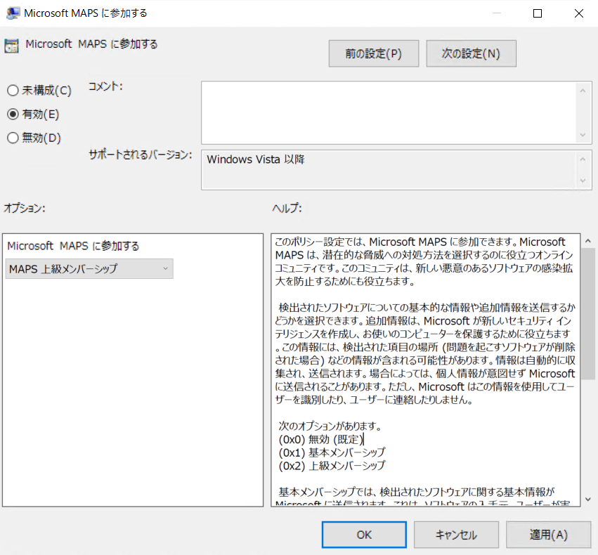
Note
クラウド保護機能を有効化する際に選択可能な「MAPS 基本メンバーシップ」と「MAPS 上級メンバーシップ」のオプションは従来の設定であり、Windows 10 および 11 ではどちらのオプションを使用した場合でも同じレベルのクラウド保護が提供されます。
クラウド保護機能のクラウド保護レベルについて
MDAV のクラウド保護機能は、既定で正当なファイルを検出するリスクを高めることなく、クラウドサービスとの連携による強力な保護機能を提供しますが、クラウド保護レベルの設定を変更することでより強力な保護を適用することが可能です。
クラウド保護機能のクラウド保護レベルは、下記公開情報におまとめしている手順にてグループポリシーや Intune を使用して変更することができます。
参考情報：Microsoft Defender ウイルス対策のクラウド保護レベルを指定する | Microsoft Learn
クラウド保護レベル「High(高いブロックレベル)」 を使用する場合、クライアントのパフォーマンスを最適化しながら不明なファイルを積極的にブロックすることができますが、一方で正当なファイルを誤検出するリスクが高まります。
また、クラウド保護レベル「High+(さらに高いブロックレベル)」を使用する場合には、より積極的に安全性が不明なファイルをブロックするようになるため、誤検出のリスクやシステムパフォーマンスに影響を与える可能性がさらに高まります。
サンプル送信機能について
MDAV のサンプル送信機能は、クラウド保護機能が端末から送信されたファイルのメタデータから脅威の有無を判定できない場合に、ファイルのサンプルを Microsoft のクラウドサービスに送信し、さらなる調査を要求することができる機能です。
Microsoft のクラウドサービスに送信されたファイルは機械学習モデルを使用して解析されます。
MDAV のサンプル送信機能は既定で有効化されており、「安全なサンプルを自動的に送信する」オプションが使用されます。
管理者は、グループポリシーや Intune、PowerShell などを使用し、以下のいずれかのオプションを指定してサンプル送信機能を有効化することができます。
- 安全なサンプルを自動的に送信する
- 一般的に PII データが含まれていないとみなされる安全なサンプル(
.exe、.dll、.bat、.scrファイルなど)をクラウドサービスに自動的に送信します。 - ファイルに PII データが含まれている可能性がある場合、端末のユーザーにファイルの送信を許可するか否かを確認する通知が表示されます。
- 一般的に PII データが含まれていないとみなされる安全なサンプル(
- 常に確認する
- 端末のユーザーにファイルの送信を許可するか否かを確認する通知が常に表示されます。
- すべてのサンプルを自動的に送信する
- すべてのサンプルファイルが自動的に Microsoft のクラウドサービスに送信されます。(Word ドキュメントなどに埋め込まれたマクロをサンプルとして送信する場合にはこのオプションを使用する必要があります。)
- 送信しない
- サンプルファイルの送信を無効化します。
- サンプルファイルの送信を無効化した場合、事前ブロック(BAFS) 機能も無効化されるため、端末の保護の観点からサンプル送信機能の無効化は推奨しておりません。
グループポリシーを使用してサンプル送信機能を有効化してオプションを指定する場合には、[コンピューターの構成]>[管理用テンプレート]>[Windows コンポーネント]>[Microsoft Defender ウイルス対策]>[MAPS] から [詳細な分析が必要な場合はファイルのサンプルを送信する] ポリシーを構成します。
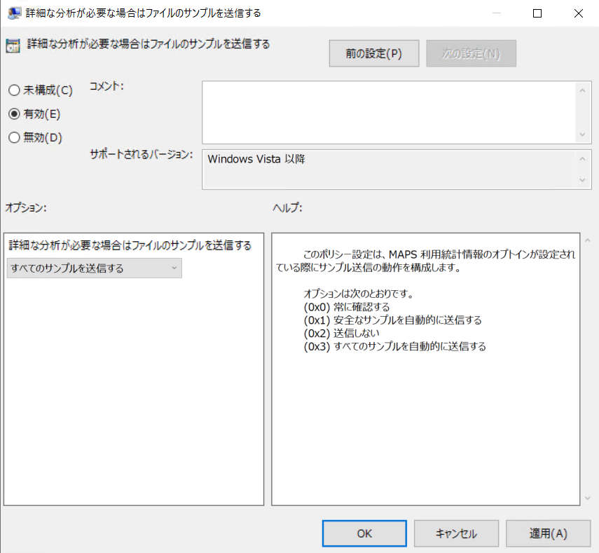
ヒント
端末のセキュリティ向上の観点からは、サンプル送信を有効化して「すべてのサンプルを自動的に送信する」のオプションを使用することをおすすめします。
参考情報：Microsoft Defender ウイルス対策でのクラウド保護とサンプル提出 | Microsoft Learn
BAFS 機能について
Block at first sight(BAFS)機能とは、クラウド保護機能とサンプル送信機能を利用して新しいマルウェアを検出/ブロックするための保護機能です。
Microsoft のクラウドサービスがファイルのハッシュ値などの情報から脅威の有無を判断できない場合、MDAV は一時的にファイルをロックし、サンプル送信機能を用いて詳細分析を行います。
送信されたサンプルファイルに対する詳細分析の結果により、ファイルの実行が許可されるか、ブロックされるかが決定されます。
BAFS 機能の詳細については以下の公開情報にておまとめしております。
参考情報：事前ブロックを有効にして、マルウェアを数秒で検出する | Microsoft Learn
警告
BAFS 機能を無効化すると端末の保護が低下するため、この機能は有効化することを推奨します。
改ざん防止機能について
改ざん防止機能の概要
MDAV の改ざん防止機能(Tamper Protection) は、悪意のある攻撃者による端末のセキュリティ保護機能の設定変更もしくは無効化を防止するための機能です。
端末で改ざん防止機能を有効化することで、端末のリアルタイム保護機能やクラウド保護機能などの主要な保護機能を無効化が禁止されます。
改ざん防止機能の詳細については以下の公開情報におまとめしております。
参考情報：改ざん防止機能を使用してセキュリティ設定を保護する | Microsoft Learn
Windows 端末で改ざん防止機能を有効化する方法
Windows 端末で改ざん防止機能を有効化する方法は、端末の利用環境により異なります。
なお、本記事では主に Microsoft Defender for Endpoint(MDE) や Microsoft Intune により端末を管理している環境で改ざん防止機能を有効化する方法をおまとめしております。
Microsoft Endpoint Configuration Manager(MECM) を利用する場合には下記の公開情報の記載をご参照ください。
参考情報：改ざん防止機能を使用してセキュリティ設定を保護する
- 端末が MDE や Intune により管理されていない場合
端末が MDE や Intune により管理されていないクライアント OS の場合、ユーザーは Windows セキュリティアプリにて改ざん防止機能の設定を変更することができます。
※ Windows セキュリティアプリで改ざん防止機能の設定を変更する場合は、[ウイルスと脅威の防止の設定]>[設定の管理] 画面より [改ざん防止] のトグルボタンを変更します。
- 端末が MDE にオンボードされており、かつ Intune により管理されていない場合
端末が MDE にオンボードされており、Intune により管理されていない場合、Microsoft Defender ポータルの [設定]>[エンドポイント]>[高度な機能] から [改ざん防止] の設定を有効化することで、MDE にオンボードされた要件を満たす端末で改ざん防止機能を有効化することができます。
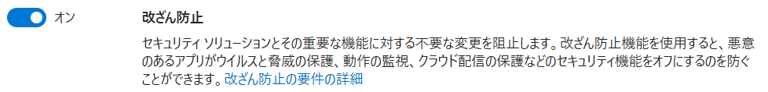
Microsoft Defender ポータルを使用して改ざん防止機能を有効化するための詳しい要件については以下の公開情報におまとめしております。
参考情報：Microsoft Defender XDRを使用してorganizationの改ざん防止を管理する | Microsoft Learn
警告
Microsoft Defender ポータルから改ざん防止機能を有効化する場合、MDE にオンボードされた端末でクラウド保護機能が有効化されており、Microsoft のクラウドサービスに接続できる必要があります。
詳細については 改ざん防止機能を有効化できない場合のトラブルシューティング の項を参照してください。
- 端末が MDE にオンボードされており、かつ Intune により管理されている場合
端末が MDE にオンボードされており、かつ Intune により管理されている場合、端末の改ざん防止機能は MDE もしくは Intune ポリシーのいずれかの方法で有効化することが可能です。
Intune で改ざん防止機能を管理するためのすべての要件については以下の公開情報の記載をご確認ください。
参考情報：Intune で改ざん防止を管理するための要件 | Microsoft Learn
要件を満たす端末で Intune ポリシーを使用して改ざん防止機能を有効化する場合は、Intune 管理ポータルの [エンドポイント セキュリティ]>[ウイルス対策] にて [+ポリシーの作成] をクリックし、Windows プラットフォーム用の Windows Security Experience ポリシーを新規に作成し、[Tamper Protection(Device)] を [オン] に設定します。
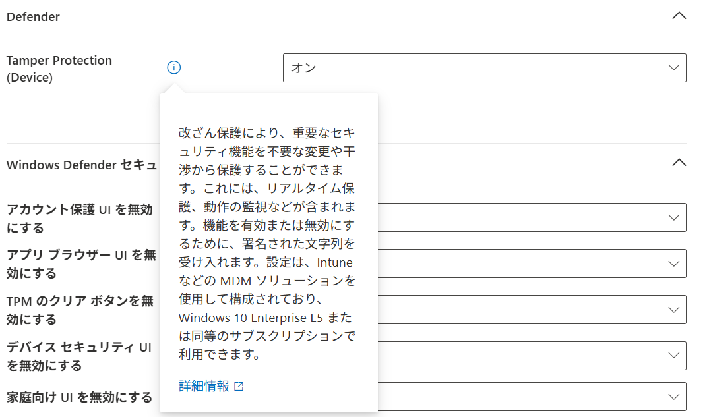
ヒント
Intune により改ざん防止機能が管理されている場合、Microsoft Defender ポータルで改ざん防止をオンまたはオフにしても、改ざん防止の状態には影響しません。
- 端末が MDE にオンボードされておらず、かつ Intune により管理されている場合
端末で改ざん防止機能を有効化することはできません。
警告
Windows 端末が Intune に登録された場合、端末の改ざん防止機能は自動的に無効化されます。
また、Intune に登録した端末で改ざん防止機能を有効化するためには、端末を MDE にオンボードする必要があります。
改ざん防止機能の設定値を確認する方法
端末で改ざん防止機能が有効化されているか否かを確認したい場合、Power Shell で以下のコマンドを実行します。
1 | Get-MpComputerStatus | Select-Object IsTamperProtected,TamperProtectionSource |
IsTamperProtected の値が True の場合、改ざん防止機能は有効化されていると判断できます。
また、MDE により有効化されている場合は TamperProtectionSource が ATP に、Intune により有効化されている場合には Intune と表示されます。
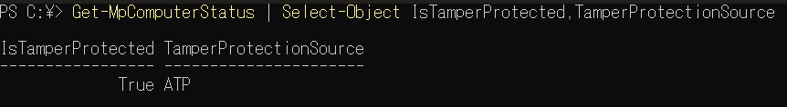
ウイルス対策の除外を改ざん防止機能で保護する方法
要件を満たす端末が MDE にオンボードされており、かつ Intune もしくは Configuration Manager のみにより管理されている場合、ウイルス対策の除外設定を改ざん防止機能により保護することができます。
端末でウイルス対策の除外に対する改ざん防止機能を利用するために満たす必要があるすべての要件については以下の公開情報におまとめしております。
参考情報：ウイルス対策の除外に対する改ざん防止 | Microsoft Learn
要件を満たす、MDE にオンボード済みかつ Intune のみにより管理されている端末でウイルス対策の除外に対する改ざん防止機能を有効化する場合は、以下の設定を行います。
- 端末で「ローカル管理者マージ」の無効化を行います。Intune を使用する場合は、[エンドポイントセキュリティ]>[ウイルス対策] から作成可能な Windows プラットフォーム用の [Microsoft Defender ウイルス対策] ポリシーを使用できます。
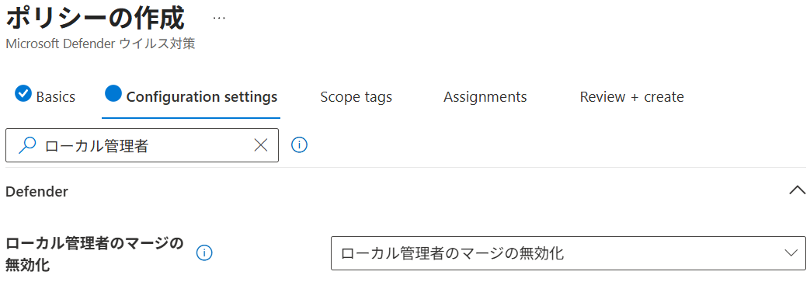
次に、Intune 管理ポータルの [エンドポイントセキュリティ]>[ウイルス対策] から作成可能な Windows プラットフォーム用の [Microsoft Defender ウイルス対策の除外] ポリシーを作成し、端末に任意の除外設定を配布します。
ウイルス対策の除外設定の概要や詳しい設定方法については、以下の公開情報にておまとめしております。
参考情報：Windows におけるウイルス対策と除外に関するよくあるお問い合わせ | Japan CSS Security Support Blog
上記の設定の実施後、端末でウイルス対策の除外に対する改ざん防止機能が有効化されていることを確認するには、以下のコマンドを実行して TPExclusions の値が 1 に変更されていることを確認します。(レジストリキー TPExclusions の値を手動で変更しないでください。 このキーは設定値の確認目的のみに使用されるものであり、改ざん防止がウイルス対策の除外に適用されるかどうかには影響しません。)
1 | reg.exe query "HKEY_LOCAL_MACHINE\SOFTWARE\Microsoft\Windows Defender\Features" /v TPExclusions |
ウイルス対策の除外に対する改ざん防止機能が動作している場合、除外設定の追加が改ざん防止機能により無視されたことをイベント ID 5013 のイベントより確認することができます。
MDAVのイベントログの詳細については以下の公開情報にてご案内いたしております。
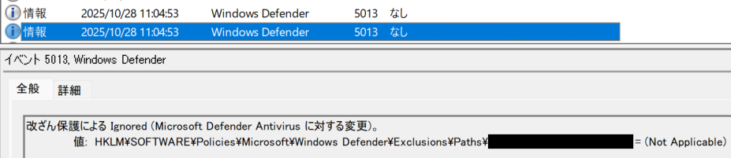
クラウド保護機能の通信に関するトラブルシューティング
この項では Microsoft Defender ウイルス対策(MDAV) のクラウド保護機能(MAPS) の問題に関するトラブルシューティング手順についてご案内します。
端末でクラウド保護機能を有効化しているにも関わらず、クラウド保護機能が動作していない場合や、端末が MDE のセキュリティに関する推奨事項「Fix Windows Defender Antivirus cloud service connectivity」の対象として表示される場合などにはこちらの手順をお試しください。
クラウド保護機能の設定値を確認する
端末で以下の PowerShell コマンドを実行し、MAPSReporting の値が 0(無効) 以外の値であることを確認します。
1 | (Get-MpPreference).MAPSReporting |
クラウド保護機能の設定をオンに変更するために使用可能な方法については以下の公開情報におまとめしております。
参考情報：クラウド保護を構成する方法 | Microsoft Learn
クラウド保護機能の接続テストを行う方法
端末でクラウド保護機能を有効化しているにも関わらず問題が発生する場合、管理者権限で起動したコマンドプロンプトで以下のコマンドを実行することでクラウド保護機能のテストを行います。
1 | "%ProgramFiles%\Windows Defender\MpCmdRun.exe" -ValidateMapsConnection |
クラウド保護機能のテストに成功する場合、「ValidateMapsConnection successfully established a connection to MAPS」というメッセージが表示されます。
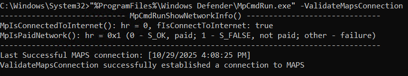
クラウド保護機能のテスト方法の詳細については以下の公開情報をご参考ください。
参考情報：cmdline ツールを使用してクラウド提供の保護を検証する | Microsoft Learn
なお、上記のテストコマンドがエラーコード 0x80070005 で失敗する場合は、管理者権限で起動したコマンドプロンプトでテストコマンドを実行しているかを今一度ご確認ください。
また、エラーコード 0x80508015 でテストコマンドが失敗する場合は、クラウド保護機能の設定値を確認する の手順でクラウド保護機能が有効化されていることをご確認ください。
その他のエラーコードでテストコマンドが失敗する場合には、以下のトラブルシューティング手順をお試しください。
クラウド保護機能の通信要件を確認する
クラウド保護機能を有効化しているにも関わらずテストコマンドの実行時にエラーが発生する場合には、まず端末がインターネットに接続可能であるか否かを確認します。
端末がインターネットに接続可能である場合には、下記公開情報の [サービスと URL] に記載の通信先への接続が、組織のファイアウォールなどによりブロックされていないことをご確認ください。
参考情報：サービスと URL | Microsoft Learn
端末がインターネットへの接続にプロキシサーバーを必要とする場合は、システム全体の WinHTTP プロキシを構成することをおすすめいたします。(端末は、指定したプロキシサーバーを経由して前述の [サービスと URL] に記載の通信先と HTTPS 接続できる必要があります。)
参考情報：Microsoft Defender ウイルス対策 ネットワーク接続を構成および検証する | Microsoft Learn
WinHTTP プロキシの設定を手動で変更する方法については、プロキシを使用して Defender for Endpoint サービスに接続するようにデバイスを構成する の記載をご参考ください。
警告
端末にシステム全体のプロキシが構成されていない場合、Windows はプロキシを認識せず CRL をフェッチできないため、http://cp.wd.microsoft.com/ などの URL への TLS 接続に失敗します。
上記の仕様によりクラウド保護機能に必要な TLS 接続に失敗する問題は、Microsoft Defender ウイルス対策(MDAV)の静的プロキシを構成する でご案内している MDAV の静的プロキシのみを利用する端末でも発生する可能性があります。
その場合は、前述の通りシステム全体の WinHTTP プロキシを構成することをおすすめいたしますが、非推奨の回避策としてクラウド保護機能の通信のみ CRL のチェックを無効化するオプションを使用する方法があります。
この方法でクラウド保護機能の通信のみ CRL のチェックを無効化する場合は、HKLM\SOFTWARE\Policies\Microsoft\Windows Defender\Spynet に DWORD 値 SSLOptions を作成し、値を 2 に設定します。
コマンドを使用してレジストリキーを変更する場合は、管理者権限で起動したコマンドプロンプトで以下のコマンドを実行します。
1 | reg.exe add "HKLM\SOFTWARE\Policies\Microsoft\Windows Defender\Spynet" /v SSLOptions /t REG_DWORD /d 2 /f |
警告
組織で TLS インスペクション機能を持つ製品を利用している場合、サービスと URL に記載の接続先を TLS インスペクションの除外対象に登録することが必要となる場合があります。
また、TLS インスペクション機能の影響でクラウド保護機能の通信が失敗している可能性がある場合は、SSLOptions の値を 0 もしくは 1 に変更します。
改ざん防止機能を有効化できない場合のトラブルシューティング
この項では、改ざん防止機能を有効化できない場合のトラブルシューティング方法をおまとめします。
問題の発生環境が改ざん防止機能の要件を満たすことを確認する
ほとんどの場合、改ざん防止機能を有効化できない問題は、その端末が改ざん防止機能の要件を満たしていない場合に発生します。
特に、よくあるお問い合わせ事例について以下にご案内いたします。
- 端末が Intune により管理されている場合
端末が Intune により管理されている場合には、改ざん防止機能を有効化したい端末が MDE にオンボードされていることを確認してください。
端末が MDE にオンボードされていない場合、Intune により管理されている端末の改ざん防止機能を有効化することはできません。
参考情報：Intune で改ざん防止を管理するための要件 | Microsoft Learn
- 端末が MDE にオンボードされている場合
Intune により管理されていない端末が MDE にオンボードされている場合には、まず Microsoft Defender ポータルの [設定]>[エンドポイント]>[高度な機能] 画面にて、テナントで改ざん防止機能が有効化されていることを確認します。
テナントで改ざん防止機能を有効化しているにも関わらず MDE にオンボード済みの端末で改ざん防止が有効化されない場合には、MDE から改ざん防止機能を有効化するための前提要件であるクラウド保護機能の動作を確認します。
クラウド保護機能の動作確認を実施する手順については、クラウド保護機能の通信に関するトラブルシューティング の項に記載の内容をご確認ください。
特に、インターネット接続にプロキシサーバーを必要とする環境で、MDE の EDR センサー用のレジストリベースの静的プロキシ(TelemetryProxyServer) 以外のプロキシ設定が存在しない場合には、MDAV のクラウド保護機能の通信に必要なプロキシ設定を追加する必要があります。
また、端末が MDE に正常にオンボードされていない疑いがある場合は、下記公開情報をご確認いただき通信要件の確認を実施してください。
参考情報：Microsoft Defender for Endpoint(MDE) にオンボードしたデバイスがデバイスインベントリに登録されない問題のトラブルシューティング手順
クラウド保護機能に関するよくある質問
本項では、MDAV のクラウド保護機能に関するよくある質問についておまとめいたします。
クラウド保護機能は端末をどのように保護しますか
MDAV のクラウド保護機能は、Microsoft のデータと高度な機械学習モデルを使用する AI システムと連携するクラウドサービスを利用し、MDAV のリアルタイム保護機能を強化することで端末を保護します。
クラウド保護機能を利用すると、MDAV は最新の脅威からリアルタイムに端末を保護できるようになります。
また、MDAV のサンプル送信機能を有効化している場合、クラウド保護機能は未知の脅威や
ウイルス対策製品のすり抜けを目的とした悪意のあるファイルの実行を速やかにブロックし、端末の保護レベルを向上します。
以下は、クラウド保護とサンプル送信機能が端末の保護を行う際の動作を簡略化した説明です。
より詳細な内容については、クラウド保護とサンプル提出のしくみ の記載をご参考ください。
- MDAV によるリアルタイムファイルスキャン時に、端末内のセキュリティインテリジェンス(定義ファイル) などの情報から脅威の有無を明確に判断できない場合には、より高度な分析のためにファイルのメタデータがクラウドサービスに送信されます。(この時送信されるデータにはファイルのデータや個人情報などは含まれず、脅威判定に利用されるハッシュ化された情報などの非常に小さなデータが送信されます。)
- 送信されたメタデータを Microsoft のクラウドサービスで解析した結果、さらなる分析が必要と判断された場合には、端末にサンプルファイルの送信が要求されます。
- 端末で自動サンプル送信機能が有効化されており、かつサンプルファイルの送信が可能な場合には、詳細分析のために対象のファイルが弊社クラウドサービスに送信されます。
- Microsoft のクラウド保護サービスは送信されたサンプルファイルに対して機械学習モデルを利用した高度なスキャンや分析を行います。
- クラウド保護機能によるスキャンの結果が端末に提供され、スキャン結果に応じてファイルのブロックなどの処理が行われます。
クラウド保護機能が利用する通信先のアドレスを教えてください
クラウド保護機能を含む MDAV が利用する通信先は下記公開情報にてご案内しております。
クラウド保護機能が使用するアドレスについては、「Microsoft Defenderウイルス対策クラウド配信保護サービス / Microsoft Active Protection Service (MAPS) 」の項をご確認ください。
参考情報：Microsoft Defender ウイルス対策 ネットワーク接続を構成および検証する | Microsoft Learn
アプリケーションの初回実行時のみ起動が遅い場合があるのはなぜですか
端末が BAFS 機能を有効化している場合、MDAV は未知のファイルの実行を一時的にロックし、クラウドサービスの詳細分析を待機する場合があります。
そのため、BAFS 機能を有効化している場合には、アプリケーションの初回起動時のみ起動が遅延する事象が発生する場合があります。
なお、クラウド保護とサンプル送信機能および BAFS 機能は、端末の保護の観点からいずれも有効化いただくことを推奨しております。
そのため、アプリケーションの初回起動時の遅延を回避する目的でこれらの機能を無効化いただくことはおすすめしません。
もし、BAFS 機能によるアプリケーション起動時の遅延を許容できない場合には、クラウド ブロックのタイムアウト期間を構成する に記載の手順に従いファイルブロックのタイムアウト期間を変更するか、ウイルス対策の除外設定の利用を検討してください。
重要
スキャン除外の設定はセキュリティレベルの低下をもたらす恐れがあるため、弊社では原則として不必要な除外設定の実施を推奨しておりません。
また、MDAV の除外設定を行う際には、除外に伴うセキュリティリスクの評価や、組織のセキュリティポリシーに合わせた設定の検討および定期的なレビューなどの実施をおすすめしております。
BAFS 機能とは何ですか
BAFS 機能について の項をご参考ください。
クラウド保護機能のメンバーシップの違いについて教えてください
グループポリシーなどを使用してクラウド保護機能(MAPS)の設定を変更する場合、[コンピューターの構成]>[管理用テンプレート]>[Windows コンポーネント]>[Microsoft Defender ウイルス対策]>[MAPS] から、[Microsoft MAPS に参加する] ポリシーを使用します。
この [Microsoft MAPS に参加する] ポリシーを使用してクラウド保護機能を有効化する場合、オプションとして [基本メンバーシップ] もしくは [上級メンバーシップ] のいずれかを指定できます。
しかし、Windows 10 もしくは 11 のクライアント OS ではどちらのオプションを選択してもクラウド保護機能の動作に差異は発生せず、どちらを設定しても同じレベルの保護が提供されます。
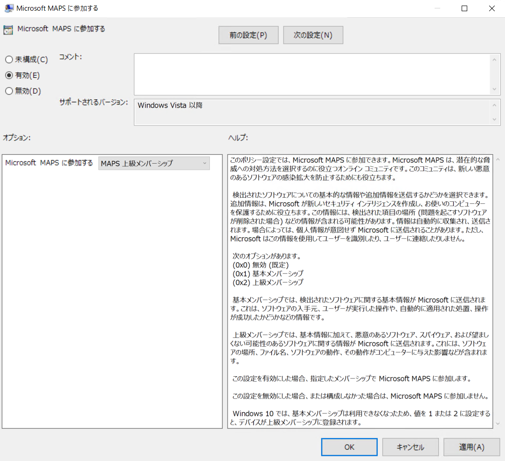
改ざん防止機能に関するよくある質問
本項では、MDAV の改ざん防止機能に関するよくある質問についておまとめいたします。
改ざん防止機能により保護される設定は何ですか
改ざん防止機能が有効化されている場合に変更から保護される設定については以下の公開情報にておまとめしております。
参考情報：改ざん防止が有効になっているとどうなりますか? | Microsoft Learn
Note
ウイルス対策の除外に対する改ざん防止は、ウイルス対策の除外に対する改ざん防止 に記載の要件を満たす場合にのみ適用されます。
改ざん防止機能により、組織の端末に配布している設定の変更がブロックもしくは無視されたことを確認する場合は、MDAV のイベントログから ID 5013 のイベントを確認します。
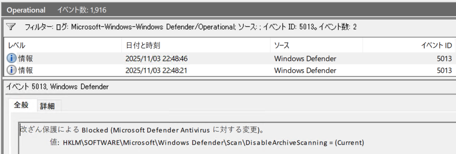
MDAVのイベントログの詳細については以下の公開情報にてご案内いたしております。
参考情報：Microsoft Defender ウイルス対策イベントの ID とエラー コード
トラブルシューティングのために改ざん防止機能で保護された設定を変更する方法はありますか
特定の端末でのトラブルシューティングを目的として一時的に改ざん防止機能を無効化し、保護された設定を変更したい場合には、MDE のトラブルシューティングモードを利用することができます。
MDE にオンボードされている端末でトラブルシューティングモードを有効化するには、Microsoft Defender ポータルで対象の端末の詳細画面を開き、右上のメニューから [トラブルシューティングモードをオンにする] を選択します。
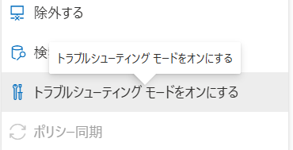
端末でトラブルシューティングモードが有効化されたことを確認するには、PowerShell で以下のコマンドを実行します。
1 | Get-Mpcomputerstatus |Select-Object TroubleShootingMode,TroubleShootingStartTime |
端末のトラブルシューティングモードを有効化すると、既定の有効期限が経過するまで、端末の改ざん防止機能を無効化して保護された設定を変更できるようになります。
詳細については下記公開情報の記載をご確認ください。
参考情報：Microsoft Defender for Endpointでのトラブルシューティング モードの概要 | Microsoft Learn
Note
端末が MDE にオンボードされていない場合、Windows セキュリティアプリから改ざん防止機能を無効化することができます。
Windows セキュリティアプリに改ざん防止の項目が表示されません
ご利用中の OS が下記公開情報にてご案内しているバージョンの Windows Server OS である場合、Windows セキュリティアプリに改ざん防止の項目は表示されません。
Windows Server で改ざん防止機能が有効化されているか否かを確認したい場合は、PowerShell で以下のコマンドを実行してください。
1 | Get-MpComputerStatus | Select-Object IsTamperProtected,TamperProtectionSource |
参考情報：Windows Server 2012 R2、2016、または Windows バージョン 1709、1803、または 1809 での改ざん防止 | Microsoft Learn
また、トラブルシューティングモードを有効化した後に Windows Server の改ざん防止機能を無効化したい場合は、管理者権限で起動した PowerShell で以下のコマンドを実行してください。
1 | Set-MPPreference -DisableTamperProtection $true |
トラブルシューティングモード中に無効化した改ざん防止機能を再有効化したい場合には以下のコマンドを実行します。
1 | Set-MPPreference -DisableTamperProtection $false |
Windows Server でパッシブモードへの切り替えができません
MDAV がアクティブモードで稼働する Windows Server を MDE にオンボードして改ざん防止機能を有効化した場合、レジストリキーを追加して ForceDefenderPassiveMode を 1 に設定した場合でも MDAV の動作モードはパッシブモードには切り替わりません。
そのため、Windows Server でサードパーティのウイルス対策製品と MDE を併用する場合には、端末を MDE にオンボードする前に、MDAV の動作モードをパッシブモードに変更しておく必要があります。
Windows Server でパッシブモードを使用する方法の詳細については下記公開情報をご参考ください。
参考情報：Windows Serverモードとパッシブ モード | Microsoft Learn
改ざん防止機能をグループポリシーで管理することはできますか
本記事作成時点では、改ざん防止機能をグループポリシーで有効化もしくは無効化することはできません。
改ざん防止機能をレジストリキーで管理することはできますか
本記事作成時点では、改ざん防止機能をグループポリシーで有効化もしくは無効化することはできません。
警告
レジストリキーの変更による改ざん防止機能の設定変更はサポートされておりませんので、レジストリキーの直接変更を実施しないでください。
その他のよくある質問
MDAV のリアルタイム保護機能を一時的に無効化する方法を教えてください
トラブルシューティングなどの目的で MDAV のリアルタイム保護機能を一時的に無効化する必要がある場合は、下記の手順を使用できます。
警告
MDAV のリアルタイム保護機能の無効化は端末の保護レベルを大きく低下させる恐れがあるため、作業の実施後は必ずリアルタイム保護の設定を復元してください。
<事前準備>
はじめに、sc.exe query Sense コマンドで MDE のサービス(Sense サービス)の実行ステータスを確認し、対象の端末が MDE にオンボードされているか否かを特定します。
端末が MDE にオンボードされている場合、上記コマンドを実行することで Sense サービスが実行中(STATE: 4 RUNNING) であることを確認することができます。
一方で、端末 MDE にオンボードされていない場合には Sense サービスは停止中のままとなります。

<端末が MDE にオンボードされている場合の手順>
- (対象の端末が MDE にオンボード済みの場合のみ) Microsoft Defender ポータルで対象の端末の詳細画面を開き、右上のメニュー [トラブルシューティングモードをオンにする] をクリックします。
- 対象のマシンにログインし、Windows セキュリティアプリを起動します。
- [ウイルスと脅威の防止]>[設定の管理] を開きます。
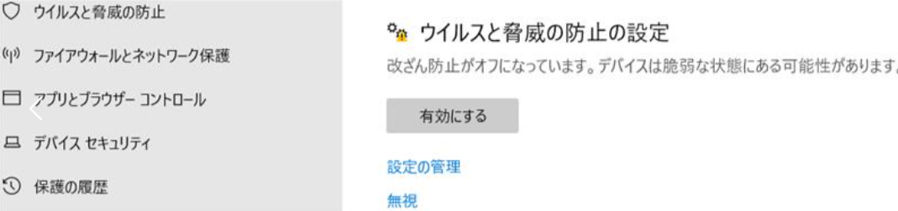
- 改ざん防止機能が有効化されている場合、この機能を無効化します。(Windows Server を利用しており、Windows セキュリティアプリに改ざん防止の項目が表示されていない場合は、管理者権限で起動した PowerShell で
Set-MPPreference -DisableTamperProtection $trueコマンドを実行してください。)
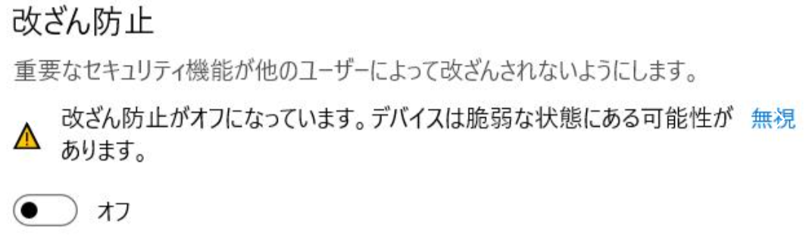
- 改ざん防止機能の無効化完了後、Windows セキュリティアプリ上で一時的にリアルタイム保護機能とクラウド提供の保護を無効化します。
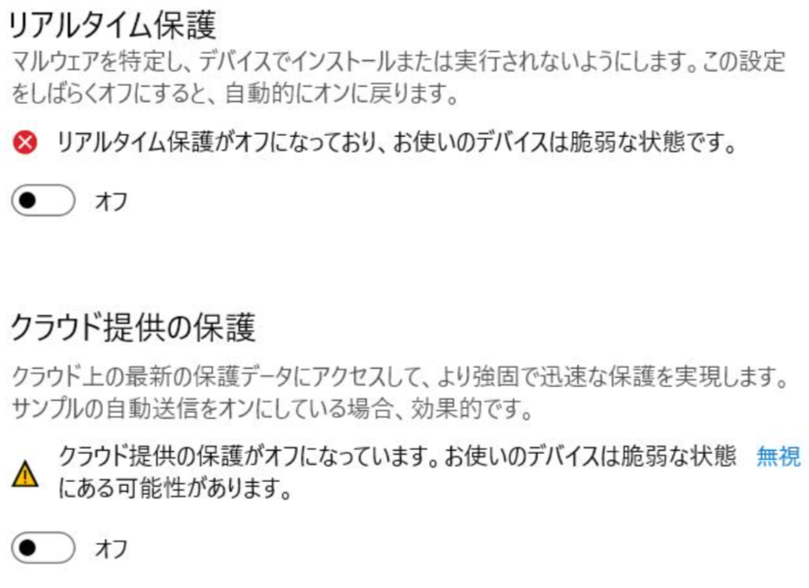
もし、Windows セキュリティアプリからリアルタイム保護機能を無効化することができない場合には、管理者権限で起動した PowerShell で以下のコマンドを実行し、リアルタイム保護機能を無効化してください。
1 | Set-MpPreference -DisableRealtimeMonitoring $true |
トラブルシューティングを終了する場合は、以下のコマンドで追加した DisableRealtimeMonitoring の設定を削除してください。
1 | Remove-MpPreference -DisableRealtimeMonitoring |
- トラブルシューティングモードを使用する場合、トラブルシューティングモードの既定の有効期限が経過した後に、改ざん防止機能や改ざん防止機能により保護される設定は復元されますが、トラブルシューティングモードの有効期限内に改ざん防止機能を再有効化したい場合には、管理者権限で起動した PowerShell で以下のコマンドを実行してください。
1 | Set-MPPreference -DisableTamperProtection $false |
<端末が MDE にオンボードされていない場合の手順>
- 対象のマシンにログインし、Windows セキュリティアプリを起動します。
- [ウイルスと脅威の防止]>[設定の管理] を開きます。
- 改ざん防止機能の設定が表示されており、かつ改ざん防止機能が有効化されている場合には、この機能を無効化します。
改ざん防止機能の無効化完了後、Windows セキュリティアプリ上で一時的にリアルタイム保護機能とクラウド提供の保護を無効化します。
もし、Windows セキュリティアプリ上でリアルタイム保護機能を無効化できない場合は、グループポリシーや Intune などの組織のポリシーにて設定が管理されている可能性があります。
その場合には、管理者にて端末に適用されているポリシーの設定を一時的に変更いただく必要があります。
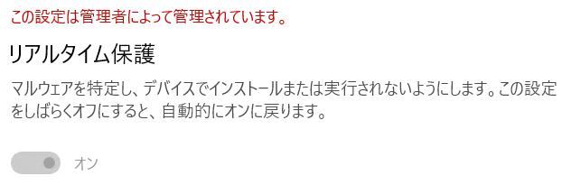
- トラブルシューティングの完了後、すべての設定を復元します。
Note
ヘッドレス UI モードが有効化されており、Windows セキュリティアプリを使用できない場合には、ヘッドレス UI モードを無効化するか、組織の管理者にご確認ください。
参考情報：Microsoft Defenderウイルス対策インターフェイスを非表示にする | Microsoft Learn
まとめ
本記事では、MDAV のクラウド保護と改ざん防止機能に関するよくある質問とトラブルシューティング手順をおまとめしました。